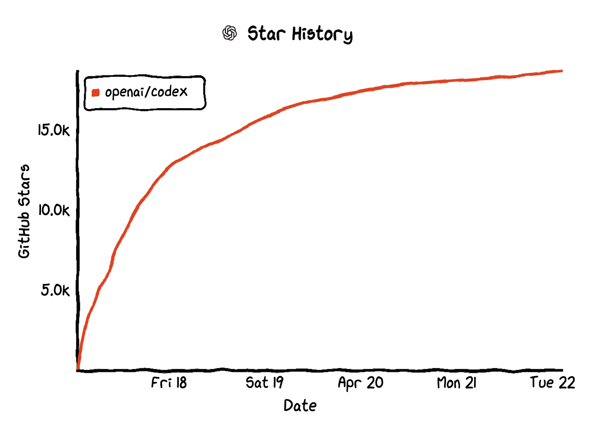
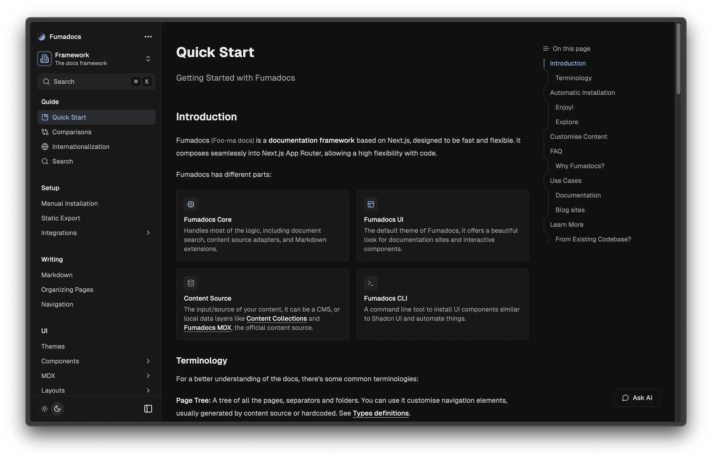
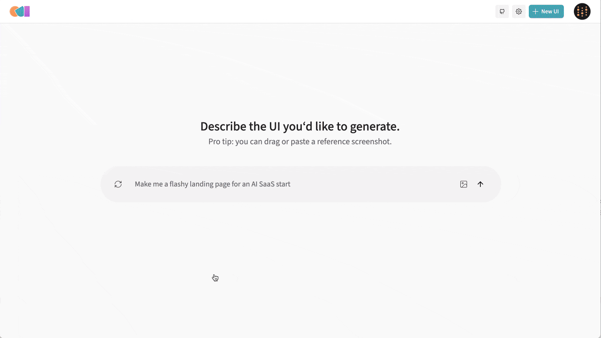
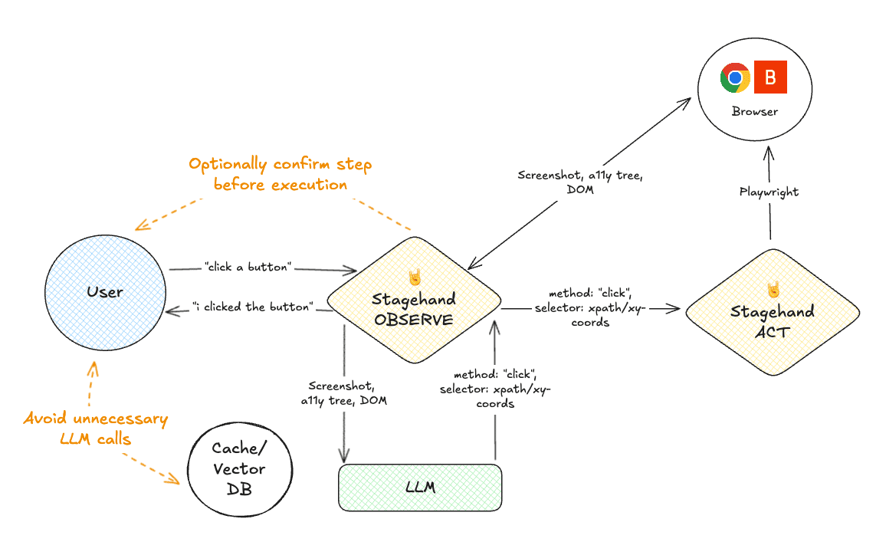
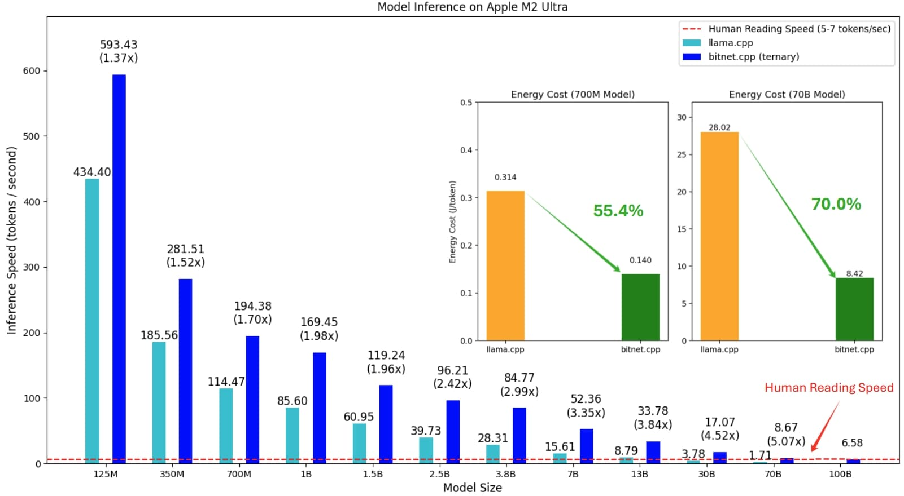
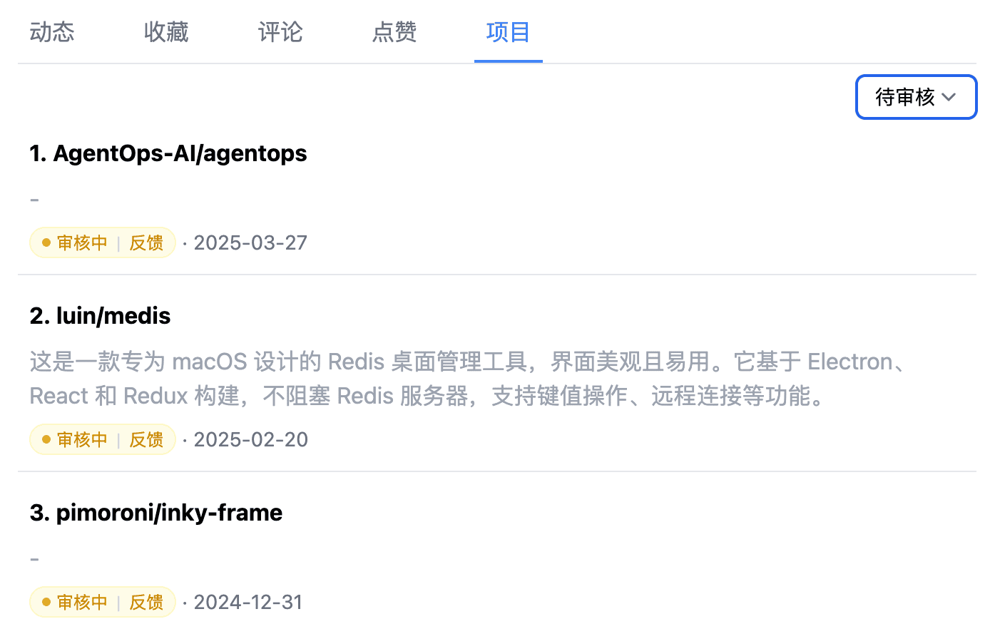
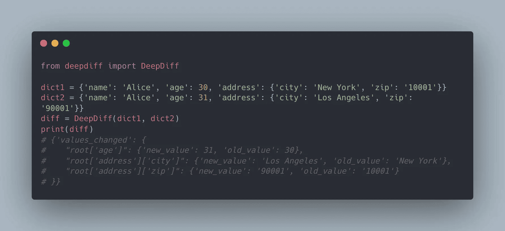

虽然现在市面上的 AI 编程助手已经“琳琅满目”，但顶流就是顶流！OpenAI 新开源的轻量级编程助手 Codex，发布不到 24 小时 Star 数就轻松破万！姗姗来迟的 OpenAI，不禁让人感叹：藏着掖着的，早干嘛去了～

说回上周的热门开源项目，首先是基于 AI 的浏览器自动化框架 Stagehand，从官方发布的评估报告来看，其准确率相当不错，并且还支持与代码结合使用，难怪能够后来居上，占领一席之地。接着是用 Next.js 打造现代化的文档网站的框架 Fumadocs，它不仅颜值高，还用的都是最时髦的前端技术，快速构建技术与美感并存的文档网站。而微软则选择另辟蹊径，推出了一款针对本地或边缘设备上运行大模型推理的推理框架，为 AI 推理提供了更多场景。
除此之外，还有一些让人眼前一亮的小工具。比如将 GitHub 通知集成到系统菜单栏的 Gitify，方便开发者随时掌握开源项目动态。以及深入比较 Python 对象的库 DeepDiff，功能强大且细致入微。
· 本文目录
· 1\. 热门开源项目
· 1.1 OpenAI 开源的轻量级编程助手：Codex
· 1.2 用 Next.js 打造现代化的文档网站：Fumadocs
· 1.3 用自然语言构建 UI 的新方式：OpenUI
· 1.4 基于 AI 的浏览器自动化框架：Stagehand
· 1.5 微软开源的 1-bit 大模型推理框架：BitNet
· 2\. HelloGitHub 热评
· 2.1 深入比较 Python 对象的库：DeepDiff
· 2.2 将 GitHub 通知带入你的系统菜单栏：Gitify
· 3\. 结尾
1. 热门开源项目
1.1 OpenAI 开源的轻量级编程助手：Codex
主语言：TypeScript，Star：18k，周增长：18k
这是一个 OpenAI 开源的命令行智能编码助手，旨在通过自然语言交互提升开发效率。它依赖 OpenAI 的 API 服务，仅需配置 OpenAI API Key 即可零门槛上手，支持代码生成、文件操作、版本控制和多模态（截图输入）等功能，适用于个人开发者、团队协作以及 CI/CD 流程。
GitHub 地址→github.com/openai/codex
1.2 用 Next.js 打造现代化的文档网站：Fumadocs

主语言：TypeScript，Star：5.3k，周增长：1.5k
该项目是基于 Next.js 构建的文档网站框架，专为快速创建现代化、高颜值、功能丰富的文档网站而设计。它完全采用 ESM 格式，紧跟前端技术潮流，支持内容集合（content-collections）、MDX、Contentlayer、TailwindCSS 等技术，适用于项目文档、API 文档、开发指南等多种文档需求。
GitHub 地址→github.com/fuma-nama/fumadocs
1.3 用自然语言构建 UI 的新方式：OpenUI

主语言：TypeScript、Python，Star：20k
该项目可以帮助用户通过简单的文字描述生成和修改 UI 界面，支持 OpenAI、Groq 和 Gemini 多种大语言模型。它提供实时渲染预览功能，并可根据需求将界面导出为 React、Svelte、Web Components 等多种代码。
GitHub 地址→github.com/wandb/openui
1.4 基于 AI 的浏览器自动化框架：Stagehand

主语言：TypeScript，Star：10.9k，周增长：700
这是一款适用于生产环境的 AI 浏览器自动化框架，可通过自然语言简化浏览器自动化任务。它底层是 Playwright，所以可无缝集成到 Playwright 项目中，支持通过自然语言调用 OpenAI、Anthropic 等主流大模型的 Computer Use 能力，并与代码逻辑灵活结合。Stagehand 官方还提供了在不同模型下的准确性、成本和速度等方面的测评结果。
GitHub 地址→github.com/browserbase/stagehand
1.5 微软开源的 1-bit 大模型推理框架：BitNet

主语言：C++、Python，Star：15k，周增长：2k
该项目是微软专为 CPU 本地推理和极致压缩（低比特）大模型设计的推理框架。它支持对 1-bit/1.58-bit 量化模型进行高效、低能耗的推理，兼容 BitNet、Llama3-8B-1.58、Falcon3 等模型，适用于在本地或边缘设备上运行大模型推理任务，无需 GPU。
GitHub 地址→github.com/microsoft/BitNet
2. HelloGitHub 热评
在此章节中，我们将为大家介绍本周 HelloGitHub 网站上的热门开源项目，我们不仅希望您能从中收获开源神器和编程知识，更渴望“听”到您的声音。欢迎您与我们分享使用这些开源项目的亲身体验和评价，用最真实反馈为开源项目的作者注入动力。
我这个不称职的 HelloGitHub 站长，终于开工啦！网站更新如下：
· 支持通过项目名访问详情
· 提交项目页面新增状态查看，以及「催审」功能
· 优化「我的主页 -> 项目」样式

另外，欢迎各位开源项目作者来 HelloGitHub「认领」项目！通过认领，不仅能够积累用户口碑，还可以获得更多的曝光机会，并及时收到来自 HelloGitHub 社区用户的使用反馈和建议。
2.1 深入比较 Python 对象的库：DeepDiff

主语言：Python
这是一个用于深度比较、搜索和操作 Python 对象数据的 Python 库。它提供了多种模块，支持处理字典、可迭代对象、字符串等 Python 对象的差异，以及内容搜索、哈希生成和增量更新等功能。
项目详情→hellogithub.com/repository/seperman/deepdiff
2.2 将 GitHub 通知带入你的系统菜单栏：Gitify
主语言：TypeScript
这是一款开源免费的 GitHub 通知管理工具，可以将 GitHub 通知集成到用户的菜单栏，支持 Windows、Linux 和 macOS 平台。
项目详情→hellogithub.com/repository/gitify-app/gitify
3. 结尾
以上就是本期「GitHub 热点速览」的全部内容，希望这些开源项目能激发你的兴趣，找到你下一个想去尝试的工具！如果你也发现了好玩、有趣的 GitHub 开源项目想要分享，欢迎来 HelloGitHub 与我们交流心得、讨论使用体验。
往期回顾
· 7 个最近很火的开源项目
· AI 智能体引爆开源社区